原文连接:https://www.cnblogs.com/rope/p/10724604.html
一、NodeJS简介
NodeJS是开发服务器后台的东西，和PHP、JavaEE、python类似，和传统的浏览器的关注DOM的JS完全不同，将JavaScript触角伸到了服务器端。内核是Chrome浏览器的V8引擎，解析JavaScript的效率是非常快的。
创始人。
在不升级服务器配置的情况下，如何用软件手段来提升服务器性能：Ryan Dahl大致的感觉到了解决问题的关键是要通过事件驱动和异步I/O来达成目的。
传统的服务器模型：当我们做I/O操作的时候（I表示读，O表示写），CPU被磁盘操作阻塞了，此时我们称这叫做“同步I/O（synchronous I/O），阻塞I/O（blocking I/O）”。
CPU会经常对磁盘驱动发出I/O命令
此时磁盘特别忙，CPU就歇着了。造成了资源浪费。上图这种模式叫做“同步I/O”。
同步（synchronous）：当系统遇见了一个需要耗费大量时间的事情的时候，选择死等。
异步（Asynchronous）：当系统遇见了一个需要耗费大量时间的事情的时候，不死等，先做后面的事情，耗时事情做完之后，执行回调函数。
用PHP做一个例子：下面程序中红色部分是I/O操作，此时CPU被阻塞，此时为什么不限做蓝色计算部分？等红色部分做完了用“回调函数”来显示文件内容多好。
<?php
//读取文件
$myfile = fopen("txt.txt", "r");
//打印文件内存
echo fread($myfile, filesize("txt.txt"));
for($i = 2; $i < 100; $i++){
$count = 0;
for($j = 1; $j <= $i; $j++){
if($i % $j == 0){
$count++;
}
}
if($count == 2){
echo $i."<br/>";
}
}
fclose($myfile);
?>V8引擎来了。V8满足他关于高性能Web服务器的想象：
● 没有历史包袱，没有同步I/O。不会出现一个同步I/O导致事件循环性能急剧降低的情况。
● V8性能足够好，远远比Python、Ruby等其他脚本语言的引擎快。
● JavaScript语言的闭包特性非常方便，比C中的回调函数好用。
创始人Ryan Dahl想到了用V8引擎内核，用JS当做语言去开发服务端程序。
下面是Nodejs的画风，Nodejs不是语言，语言是JavaScript，Nodejs是一个平台，让我们的JS可以运行在服务端的平台。
var fs = require("fs");
fs.readFile("./txt.txt" ,function(err, data){
console.log(data.toString());
})
for(var i = 2; i < 100; i++){
count = 0;
for(var j = 1; j <= i;j++){
if(i % j == 0){
count++;
}
}
if(count == 2){
console.log(i)
}
}红色的I/O操作没有将蓝色计算操作阻塞，称为“Non-Blocking I/O”非阻塞I/O。紫色语句是回调函数。
NodeJS是一个JS运行环境，它构建在chrome的V8引擎上。使用了事件驱动、非阻塞I/O模型，使它轻量并且方便。NodeJS有一个全球最大的包生态系统npm。
Node.js使JavaScript的触角伸到了服务器开发中，在Node的世界中，我们关心的不再是用JS操作网页上的DOM、制作交互动画、表单验证……而是服务器端的事情：HTTP请求的处理、GET请求和POST请求、数据库增删改查、cookie和session等等。
Node.js的特点：单线程、非阻塞异步I/O、事件驱动。
Nodejs是JS的运行环境，它构建在Chrome的V8引擎上。
Nodejs是一个小极客，追求极致的服务器性能，剑走偏锋的产物。
与其很多服务员闲着，还不如一个服务员100%的工作。
二、NodeJS的安装
NodeJS和Java虚拟机一样，是跨平台的，也就是说只要写一份代码，可以运行在任何平台上。
去NodeJS官网下载：
|
|
安装的欢迎界面 |
|
|
同意协议 |
|
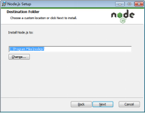
|
安装路径全程不能有中文。 事实上很多软件公司已经去中文化，文档都是英语的文件名，文件夹都是英语的。 |
|
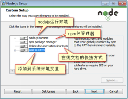
|
这个界面不需要改变任何的配置，但是要知道：这里安装了4个东西。
|
|
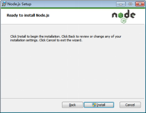
|
点击下一步就开始安装了 |
|
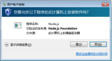
|
系统的防火墙，选择是 |
|
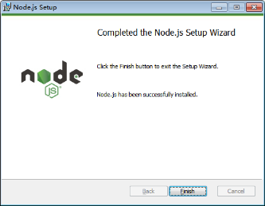
|
nodejs已经被成功的安装。 |
安装完毕之后，按windows键加R键（run），输入cmd（表示commond命令）按回车：
这是系统的密令提示符，可以输入类似DOS的命令。但是现在要输入
node -v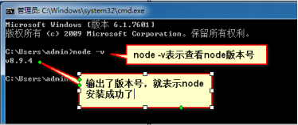
追求以下真理，安装过程，到底发生了什么？发现了一个Nodejs程序：
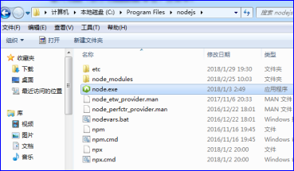
我们发现系统的环境变量中，已经添加了这个路径：
系统的环境变量可以保证我们的node在任意CMD盘符下可以被运行。
nodejs在windows中是一个exe程序。
三、运行Nodejs程序
在c盘创建一个nodejs_study文件，然后写01.js文件
将文件拖拽到浏览器中不能执行的。
因为js的执行需要宿主环境（runtime），目前我们只知道一个环境：浏览器+HTML环境。
想要运行01.js程序：
<html>
<head>
<meta charset="UTF-8" />
<title>Document</title>
</head>
<body>
</body>
<script type="text/javascript" src="01.js"></script>
</html>浏览器会渲染html就能执行js。
NodeJS是一个全新的JS宿主环境runtime。也就是说可以用node运行js程序，而不需要html和浏览器。
打开CMD，首先注意光标所在盘符位置：
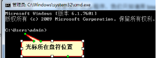
01.js文件不在C:\Users\admin>中，而是在C:\nodejs_study，所以要用cd命令来切换光标所在盘符位置：
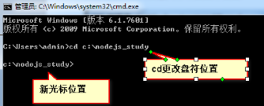
当用cd切换到01.js所在目录时，此时可以用node命令执行js文件：
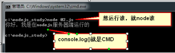
也就是说，运行js文件的时候：
① 要保证光标所在位置正确
② 运行谁，就node谁。
为了快速打开正确光标所在位置，此时有奇淫技巧：
要求大家，在运行node程序的时候，必须进入准确的盘符，不能使用绝对路径：
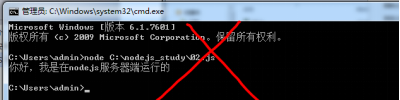
最快的运行node程序的方法就是使用visual studio code，或者webstrom。直接按F5，IDE（编程工具）内置的控制台会输出结果。
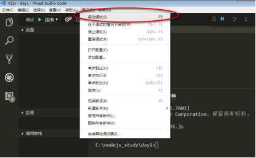
CMD的命令：
cls
清屏。
cd ..
回退到上一级文件夹
cd 文件夹名字
进入这个文件夹
dir
列出当前目录中所有的文件
↑上箭头
重复上一条指令。四、NodeJS内置模块
4.1 fs模块
NodeJS没有自己的语法，JS能写什么，node就能运行什么
但是要注意，仅限于JS语言核心部分。DOM、BOM不能用，node没有浏览器的那些东西。
document.getElementById("box");
window
alert()
但是可以用定时器
setInterval(function(){
console.log(Math.random());
},100)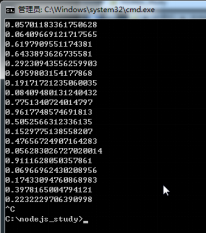
按ctrl+c可以打断Nodejs程序的执行。
Nodejs中提供了很多内置模块，帮助我们开发，可以提供浏览器所不具备的功能，模块是内置的，不需要额外安装。从fs内置模块学起，fs是file system文件系统的意思，提供了对文件的所有操作
// require表示得到，引入fs内置模块，file system文件系统模块
var fs = require("fs");
//fs模块有个方法叫readFile，可以异步读文件内容
//这个函数是异步函数，也就是说读取文件不会阻塞CPU执行，所以读取到的内容通过回调函数返回
//err参数：错误信息，没有错误将返回null
//data参数：返回文件的内容
fs.readFile("./test1.txt",function(err,data){
if(err){
console.log("文件读取错误！");
return;
}
//读取的是信息流，是Buffer是缓冲的二进制，用toString()转为字符串
console.log(data.toString());
});利用fs.readFile()这个API来读取文件，并且是异步读取文件，这里注意两个事情：
1） 第一个参数是路径，必须以"./"开头，表示从相对于当前的cmd盘符位置去读取文件。
2） 第二个参数是回调函数，注意回调函数中提供了两个参数，分别是err和data。注意，nodejs中的所有回调函数的第一个参数都是err对象，表示错误。如果没有错误，这个对象是null。
要会看API：https://nodejs.org/dist/latest-v6.x/docs/api/
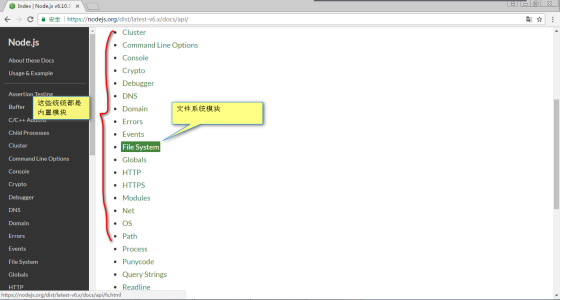
var fs = require("fs");
fs.readFile("./test1.txt",function(err,data){
console.log(data.toString());
});
fs.readFile("./test2.txt",function(err,data){
console.log(data.toString());
});
fs.readFile("./test3.txt",function(err,data){
console.log(data.toString());
});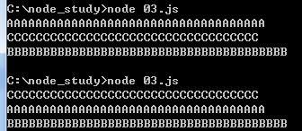
在Nodejs中要适应回调套回调函数的写法：
var fs = require("fs");
fs.readFile("./test1.txt",function(err,data){
console.log(data.toString());
fs.readFile("./test2.txt",function(err,data){
console.log(data.toString());
fs.readFile("./test3.txt",function(err,data){
console.log(data.toString());
});
});
});4.2 http模块
用http模块，Nodejs可以开发服务器。创建服务器的API要自己背诵记忆一下，不过，后面讲解Express，极大简化服务器的创建：
var http = require('http'); //读取内置http模块，这个模块提供了http服务
//创建一个服务器，是异步函数，事实上node中基本所有函数都是异步的
var server = http.createServer(function(req,res){
//req表示request用户的请求
//res表示response服务器的响应
//设置响应报文头，让类型变为html并且是utf8编码
res.setHeader("Content-type", "text/html;charset=UTF8");
//页面上输出内容，输出内容用write，end表示结束！
res.end("<h1>你好，我是nodejs开发的服务器！</h1>");
});
//监听3000端口，默认是80端口，但80被Apache占用了，所以改用3000
server.listen(3000,function(err){
if(err){
console.log("服务器开启失败！");
return;
}
console.log("服务器开启成功，在3000端口，快打开浏览器看看吧！");
});
此时CMD会被挂起，按ctrl+c打断（打断之后，服务器也打不开了）
我们来验证程序确实在服务器上运行的：
var http = require('http');
var server = http.createServer(function(req,res){
res.setHeader("Content-type", "text/html;charset=UTF8");
res.end("<h1>你好，我是nodejs开发的服务器！已经诞生了"+ (3 + 3) +"年了</h1>");
});
server.listen(3000);
在浏览器中，看不到后端node的源代码：
原因是Nodejs执行在服务器端，语句在服务器被执行、编译，此时发给浏览器的就是执行之后、编译后的纯文本了，不含有计算的。
两个问题：
1、我用Nodejs搭建的服务器，访问者也必须安装nodejs吗。
不需要的，因为nodejs是服务器程序，生成的内容仅需要浏览器就能访问
2、我们用高级ES6语法书写Nodejs程序，必须用高级浏览器访问吗。
不需要的，因为Nodejs程序不在浏览器执行。
req表示request用户的请求，访问者的所有必要信息在req中存储，比如
req.url
表示访问路径req.connection.remoteAddress
表示访问者的ip地址res表示response服务器的响应，服务器应该给与的反馈。
res.setHeader("Content-type", "text/html;charset=UTF8");
设置HTTP下行报文体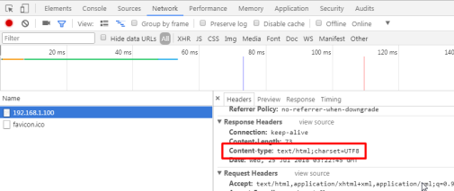
l res.end() 、res.write()负责写下行报文体（就是网页）。
res.end()结束响应，告诉客户端所有消息已经发送完毕，当所有要返回的内容发送完毕时，该函数必须被调用一次，如果不调用该函数，客户端将永远处于等待状态。
var http = require('http');
var server = http.createServer((req,res)=>{
res.setHeader("Content-type", "text/html;charset=UTF8");
//页面显示的内容
res.write("<h1>hello world！</h1>");
res.write("<ul>");
res.write("<li>Nodejs</li>");
res.write("<li>npm</li>");
res.write("<li>Express</li>");
res.write("<li>Mongodb</li>");
res.write("</ul>");
res.end(); //必须结束，否则本次操作不结束，浏览器显示为载入中
});
server.listen(3000);五、NodeJS特点
5.1单线程
写一段程序，证明NodeJS是单线程的：
var http = require("http");
//在服务器外面定义一个变量a
var a = 0;
var server = http.createServer(function(req,res){
a++;
res.end(a.toString());
});
server.listen(3000)我们发现不是每个访问者来了都有新的a值，而是全班共用一个a，每个人访问的时候看到的都是已经被刷过的a值。
var http = require("http");
var server = http.createServer(function(req,res){
var a = ~~(Math.random() * 1000);
if(a == 38){
throw new Error("有人踩地雷了，此人IP：" + req.connection.remoteAddress);
}
res.end("<h1>"+ a +"</h1>");
});
server.listen(3000)在Java、PHP或者.net等服务器端语言中，会为每一个客户端连接创建一个新的进程。而每个进程需要耗费大约2MB内存。也就是说，理论上一个8GB内存的服务器可以同时连接的最大用户数为4000个左右。要让Web应用程序支持更多的用户，就需要增加服务器的数量，而Web应用程序的硬件成本当然就上升了。
打个比喻，PHP假如是一个餐馆，那么就是一个这样的餐馆：来一个用户，它就给你新招聘一个服务员，专门伺候你。你点菜的时候，这个服务员帮你点菜，你开始吃了，你这个服务员就闲置。这就造成了大量的浪费，凭什么闲置服务员，为什么不去服务别人？
Node.js不为每个客户连接创建一个新的线程，而仅仅使用一个线程。当有用户连接了，就触发一个内部事件，通过非阻塞I/O、事件驱动机制，让Node.js程序宏观上也是并行的。使用Node.js，一个8GB内存的服务器，可以同时处理超过4万用户的连接。
打个比喻，Node.js假如是一个餐馆，那么就是一个这样的餐馆：总共就一个服务员，A用户来了，帮A用户点菜，B用户来了，B用户稍微被阻塞一下，A点完菜之后，厨师开始做，服务B，B开始点菜，点菜的时候A的菜做好了，给B点完菜之后再去给A端菜，A开始吃，此时C来了，说了句欢迎光临之后，“您看看菜单先”，就去给B端菜去了，B开始吃上了，此时C开始点菜……。
微观上，A、B、C不是并行的，但是宏观上他们是并行的！
另外，单线程的带来的好处，还有操作系统完全不再有线程创建、销毁的时间开销。

5.2异步I/O特性
再来一个案例，用户访问页面的时候，服务器要读取两个文件，此时用console查看唯一的服务员如何工作：
var server = http.createServer((req,res) => {
//用户访问的时候执行的语句。
console.log(req.connection.remoteAddress + "进门了！我招呼他去！");
res.setHeader("Content-Type","text/html;charset=UTF8");
console.log(req.connection.remoteAddress + "用户开始读1号文件");
fs.readFile("./test1.txt",(err,data1) => {
console.log(req.connection.remoteAddress + "用户读完毕1号文件，开始读2号文件");
fs.readFile("./test2.txt",(err,data2) => {
console.log(req.connection.remoteAddress+"用户读完2号文件，开始发送response");
res.write("<h1>" + data1.toString() +"</h1>");
res.write("<h1>" + data2.toString() +"</h1>");
res.end("");
});
});
});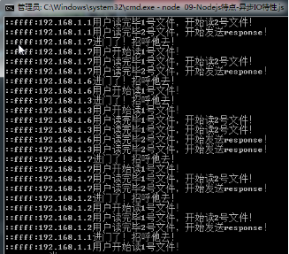
你I/O的时候CPU并没有被阻塞，去伺候别人，当别人也I/O了此时执行你的回调函数。
综上所述，nodejs是一个服务员在伺候所有人，所以擅长I/O越多的业务。I/O越多，效率越高，nodejs不会错乱，采用就是事件环机制，也叫事件驱动机制，nodejs不擅长计算多的业务，因为给一个用户计算去了，此时唯一的线程就被阻塞了，其他用户进来就等待。
比如下面的程序，红色的部分是计算水仙花数，计算很复杂，但是是同步的，所以小服务员就被阻塞了：
var server = http.createServer((req,res) => {
//用户访问的时候执行的语句。
console.log(req.connection.remoteAddress + "进门了！我招呼他去！");
console.log(req.connection.remoteAddress + "开始计算水仙花数了！");
for(var i = 100 ; i <= 999 ; i++){
// 给三位数拆分成三个单独的数
var ge = i % 10;
var shi = parseInt(i / 10) % 10;
var bai = parseInt(i / 100);
// 计算三次方的和
var sum = Math.pow(ge,3) + Math.pow(shi,3) + Math.pow(bai,3);
// 判断输出
if(sum == i){
console.log(req.connection.remoteAddress + "计算出了水仙花数" + i);
}
}
res.setHeader("Content-Type","text/html;charset=UTF8");
console.log(req.connection.remoteAddress + "开始读取文件");
fs.readFile("./test1.txt",(err,data1) => {
console.log(req.connection.remoteAddress + "读取文件完毕，开始输出响应流");
res.write("<h1>" + data1.toString() +"</h1>");
res.end("");
});
});5.3事件驱动
事件驱动是nodejs的底层机制，我们只需了解nodejs不会“上错菜”，原因就是事件驱动，有一个事件环。
在Node中，客户端请求建立连接，提交数据等行为，会触发相应的事件。在Node中，在一个时刻，只能执行一个事件回调函数，但是在执行一个事件回调函数的中途，可以转而处理其他事件（比如，又有新用户连接了），然后返回继续执行原事件的回调函数，这种处理机制，称为“事件环”机制。
Node.js底层是C++（V8也是C++写的）。底层代码中，近半数都用于事件队列、回调函数队列的构建。用事件驱动来完成服务器的任务调度，这是鬼才才能想到的。
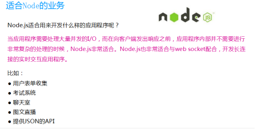
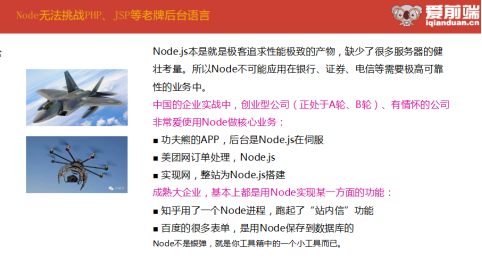
2013年开始，Nodejs突然间火爆，因为Nodejs的工作流工具火了！
我们现在学习nodejs的意义，已经从学习HTTP服务器的构建，变为学习它的工作流工具。
公司的服务器都是PHP、JSP、Python、.net制作的，nodejs做http服务是很少的。但是，每一个前端必须会Nodejs，因为之后用的所有的东西webpack、babel、gulp、grunt等等都是基于nodejs的。